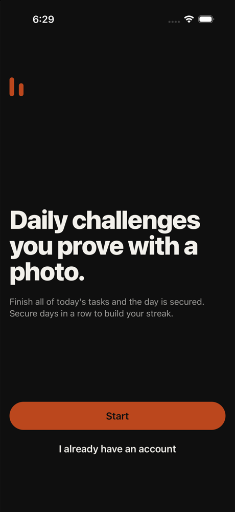
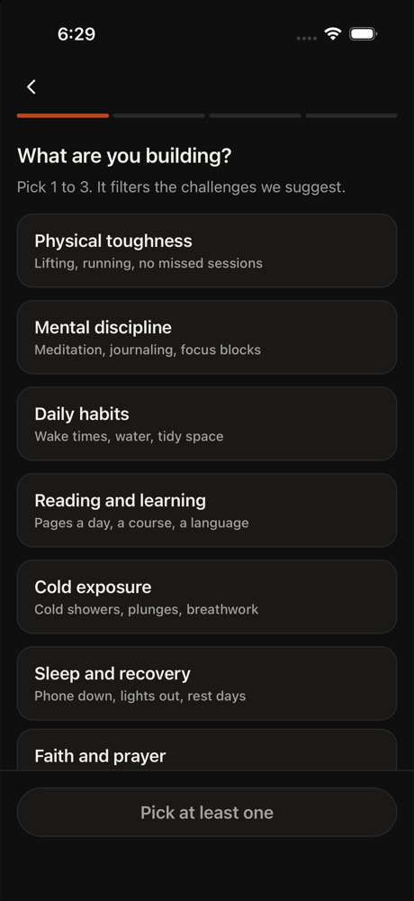
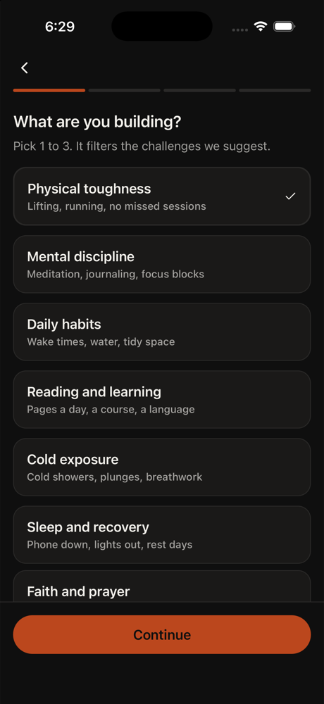
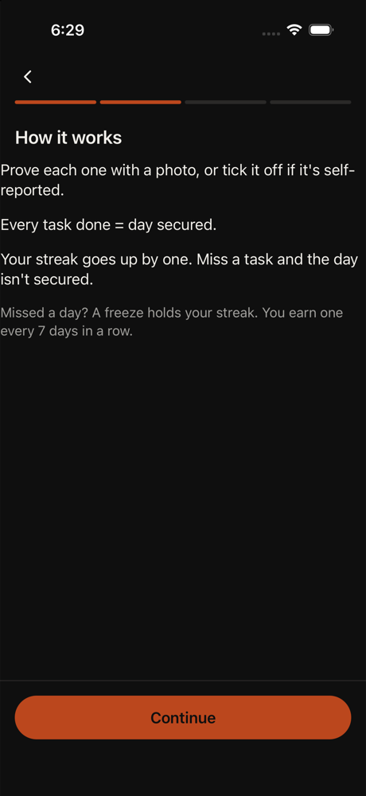
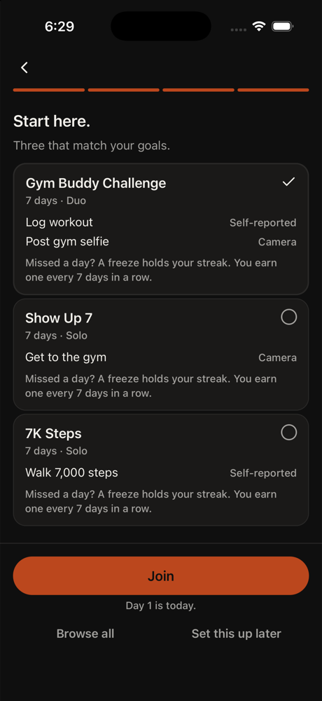
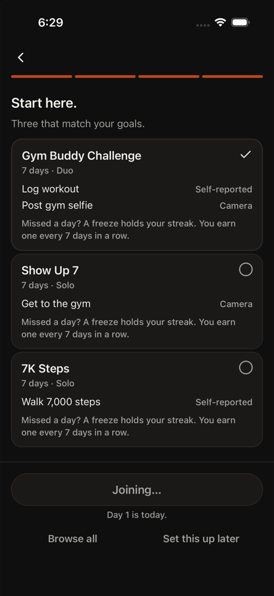
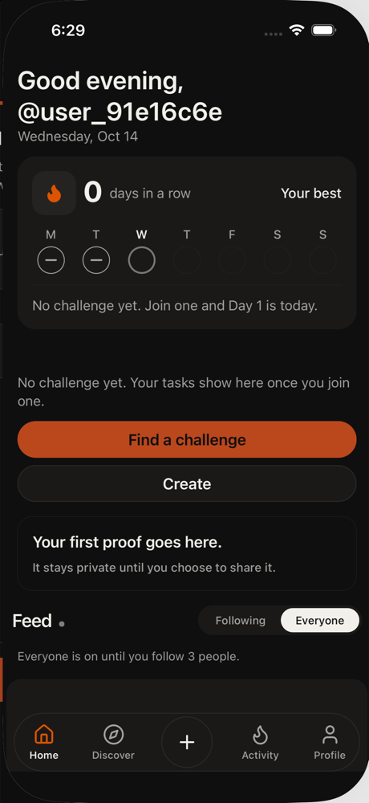
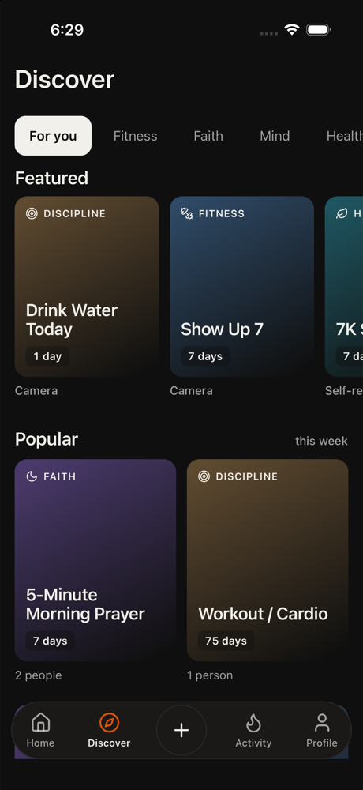
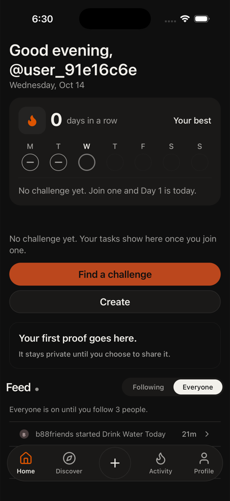
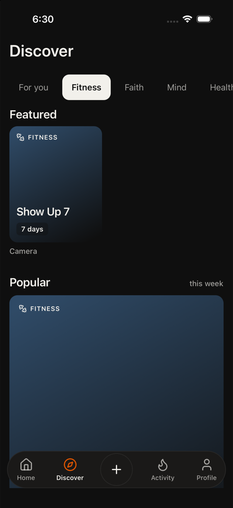

1. home tap Start
I'm on the welcome screen for GRIIT. My friend sent me a link to join a challenge, so I need to get started. The 'Start' button is the obvious first step to begin the onboarding flow.
neutral · 13548ms
Downloaded it because a friend sent a link. Wants to join that friend's challenge.
The link is the only reason she is here. Tech med, patience 3, phone small, text default, curious, English native.
Funnel stage: discover. Stages: opened → home → discover. Steps 16. 141s. is_test true. Gave up. discover repeated 3 times.
GRIIT iPhone 16. Persona phone size was recorded and not applied, because this is the simulator that has the app installed. Text size applied: large. Cleanup: kept

1. home tap Start
I'm on the welcome screen for GRIIT. My friend sent me a link to join a challenge, so I need to get started. The 'Start' button is the obvious first step to begin the onboarding flow.
neutral · 13548ms

2. onboarding tap Physical toughness
I need to select at least one goal category to proceed. Physical toughness seems like a solid choice to start with. The instruction says to pick at least one and lock it in, so I'll tap this option.
neutral · 3492ms

3. onboarding tap Continue
Physical toughness is already selected. I need to continue to the next step. The Continue button will move me forward in the onboarding flow to find out how to join my friend's challenge.
neutral · 3712ms

4. home tap Continue
I'm on the 'How it works' screen which explains the mechanics of GRIIT - tasks need to be done daily to secure the day, streaks go up by one for each completed task, and freezes are earned every 7 days. I need to tap Continue to proceed through the onboarding flow and eventually
neutral · 3893ms

5. onboarding tap Join
I'm on the 'Start here' screen showing three challenges that match my goals. The 'Gym Buddy Challenge' is already selected (has a checkmark). My friend likely sent me a link to join their challenge, but I need to either join this one first or find a way to access my friend's chal
neutral · 9873ms

6. auth tap Turn on reminders
I'm on the reminders screen for the Gym Buddy Challenge. I need to enable reminders to proceed through the onboarding. The instruction says to finish the goals in order: walk welcome, goals, how it works, Start here, join a challenge, then reminders. This is the reminders step -
neutral · 5800ms

7. home tap Find a challenge
I'm on the home screen and it says 'No challenge yet. Join one and Day 1 is today.' I need to find a way to join my friend's challenge. The 'Find a challenge' button is the most direct path to search for or access my friend's challenge link.
neutral · 4893ms

8. discover tap For you
I'm on the Discover page but I need to find my friend's challenge. The 'For you' tab is already selected. I should go back to Home to look for the challenge join option, or I could explore other tabs. But based on my recent steps, I was told to 'Find a challenge' from the home sc
Error: For you is already selected.
neutral · 9715ms

9. discover back
I'm on the Discover page but my goal is to join my friend's challenge. The 'For you' tab is already selected and showing featured/popular challenges, but none of these are my friend's challenge. I need to go back to Home to look for an option to join a specific challenge via a li
neutral · 6356ms

10. discover tap Home
I need to get back to the Home screen to look for an option to join my friend's challenge. The Discover page isn't showing my friend's specific challenge. Let me go back to Home and see if there's a way to enter a challenge code or link.
neutral · 6988ms

11. home tap Find a challenge
I'm back on the home screen. I need to find my friend's challenge. The 'Find a challenge' button is the direct way to search for or access a specific challenge. Let me tap it to see if there's an option to enter a challenge code or search for my friend's challenge.
neutral · 10905ms

12. discover scroll 50%,50%
Looking for a search bar, join code input, or link option on the Discover page to find my friend's specific challenge. The featured challenges shown aren't what I need.
neutral · 6968ms
13. discover tap Fitness
I'm on Discover > For you tab. The featured challenges shown (Drink Water Today, Show Up 7, 7K Steps) aren't my friend's specific challenge. Let me check the Fitness tab to see if there's a search feature or more challenge options there that might help me find or join my friend's
neutral · 11118ms

14. discover back
I'm on the Fitness tab in Discover, but I need to find my friend's specific challenge. The featured and popular sections here show general challenges, not a way to join via a link or code. I should go back to Home and look for a different option like a search feature or challenge
neutral · 5908ms

15. discover back
I'm stuck in the Discover section looking at general fitness challenges. My friend sent me a specific challenge link, so I need to find a way to enter that link or code. Going back to Home to look for a different option - maybe there's a direct link entry or a way to paste a chal
frustrated · 6210ms

16. discover abort
Error: Gave up. discover repeated 3 times.
frustrated · 9031ms